Procedural arenas, seeded per map node: 2–5 lanes that bend, 18 terrain kinds. Bog, ice and high ground, destructible obstacles, and 14 battle-wide conditions like Emberfall and The Long Night.
Bosses get bespoke arenas tuned to their gimmick.
The same clash across five biomes.
Between battles
The events are unhinged, and you actually play them
Wheel of Fate
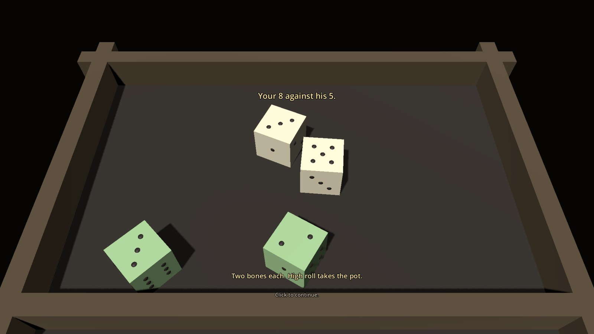
Knucklebones duel
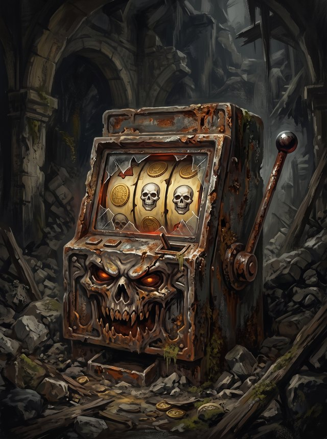
One-Armed Bandit
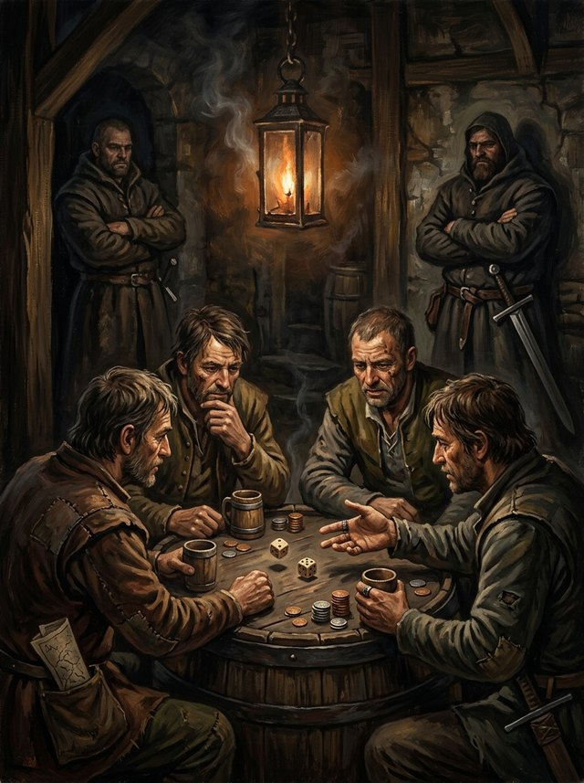
Bone Casino
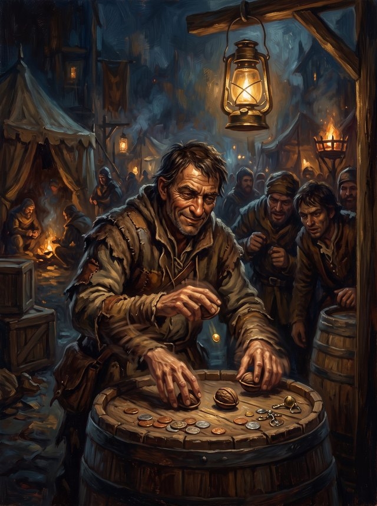
Shell Swindler
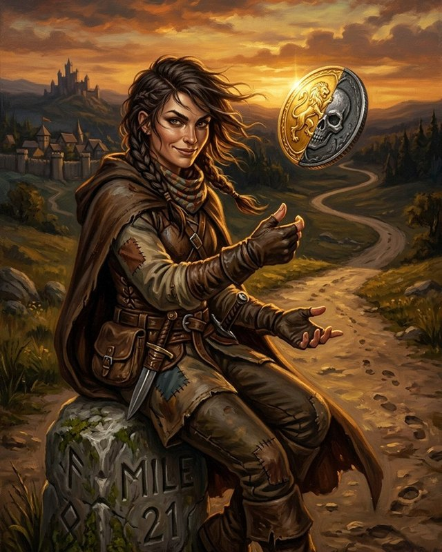
Double or Nothing
129 choose-your-own-adventure events, and a dozen of them are real minigames, played live for keeps:
Jump rope3-D physics diceRhythmSimonJigsawAuctionPress-your-luckSlotsPachinkoShell game
The dice are rigid-body physics. The wheel is honest. The mimic lures you with treasure. Every event has bespoke painted art, all 129 of them.
The toolbox
Spells, relics, potions
Meteor Storm, with a live area preview before you commit.
274 relics across five pools: starter, normal, pack synergy, boss, and boon. Passive or triggered, shown as inline icons in the run bar, each linking the card it names.
33 potions. Spells strike units or the enemy commander directly. A rule the whole enemy AI had to learn too.
Commander healing is deliberately scarce. Every point matters.
Your commander
A paper doll assembled from your draft
Every pack you draft contributes one body part. Head, torso, arms, legs, and accessory, so every run's commander looks like what you're playing.
All vector art, re-rasterized at true size for cinematics. 36 part sets, each with a gilded mastery variant.
Five playable warlords: The King, The Mummy, The Spaceman, The Gunslinger, and The Eternal, each with a signature relic and starting deck.
The doll re-dresses itself as you pick.
Meta-progression
Reasons to come back
Pack XP → unlock cards. Win with a pack, level it, open its next cards.
Pack Paths. At levels 4/5/6 each pack branches, so pick a doctrine and its cards transform.
Ascendant looks. Master a pack fully and its gilded cosmetic set is yours, with 21 matching achievements.
Compendium that fills in as you discover. Daily March. One seeded run a day, on a Steam leaderboard. 10 ascension tiers when it gets too easy.
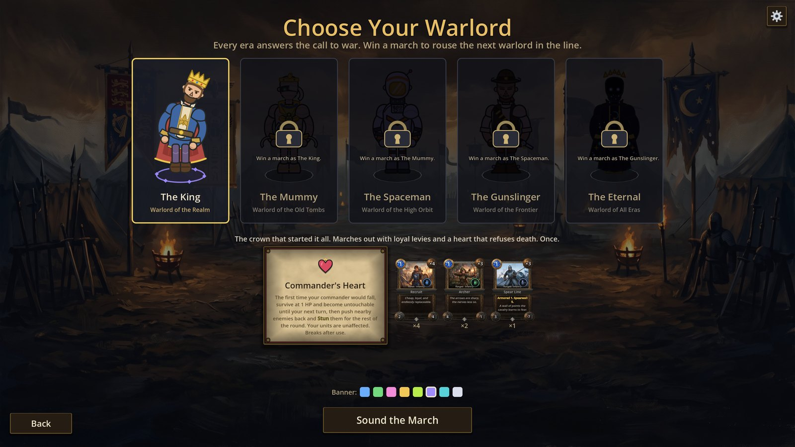
Win with one warlord to wake the next.
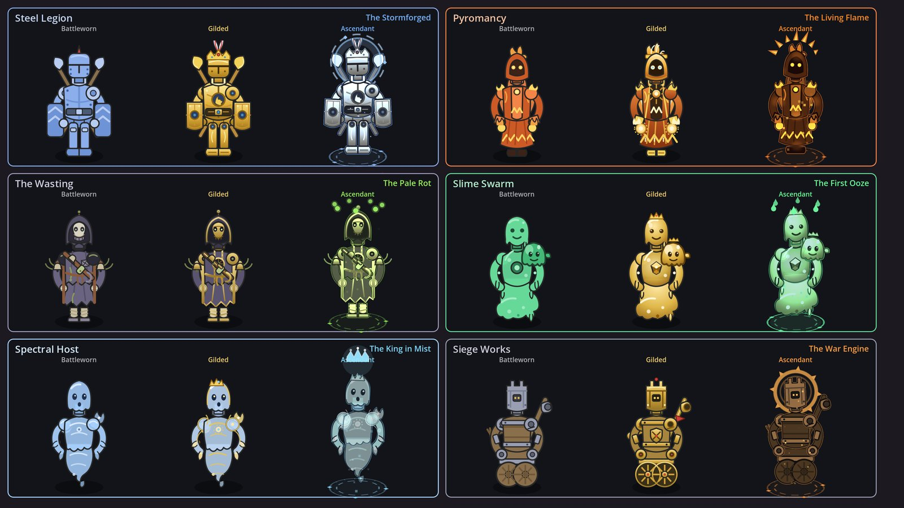
Every pack's commander in three looks: Battleworn, Gilded, Ascendant.
Multiplayer
Full 4-player online co-op
Shared clashes, allied squads, slot-colored pings and aim arrows.
Host-authoritative netcode. One real simulation, clients render 12 Hz snapshots. Solo play is byte-identical to the local path.
Steam lobbies or direct IP with UPnP auto-port-forward, so co-op works even without Steam.
Map voting, claim-a-seat resume, mid-battle rejoin, live presence. Watch an ally's fight and suggest the card they should play. 76 message types in the protocol.
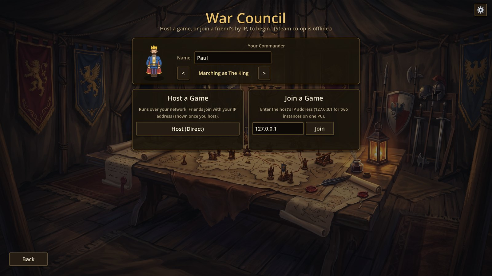
The War Council
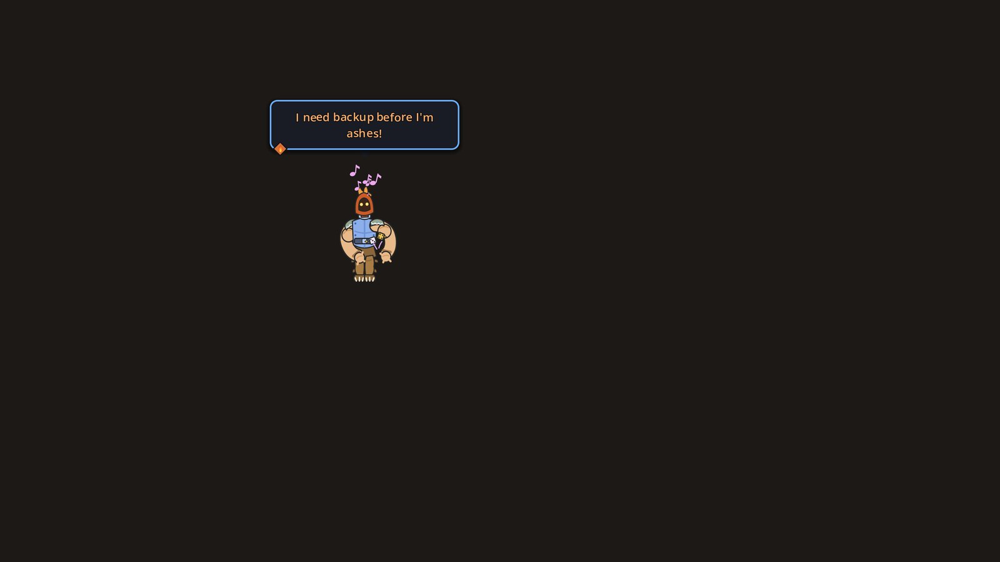
Emote wheel · 461 lines
Even the demo has co-op.
ACT II
The Factory
How one person ships like a studio: turn the studio into software.
The org chart
One human, many agents
Me
direction · taste · QA · priorities
Worker agents ×10
GitHub tickets, isolated git worktrees, parallel
Verifiers
281 test & screenshot drivers, 14 zero-tolerance audits
The Simulator
an AI that plays the whole game, hundreds of runs
Ship robots
Steam, itch, partner-site automation, Cloudflare
The management problem is the same one a real team has: write clear tickets, keep workers out of each other's way, demand evidence, merge fast.
The pipeline
GitHub issues in, merged PRs out
/ticket
work filed as issues, sized S / M / L
→
/dispatch
claims ready tickets, spawns up to 10 workers
→
worktree
each agent codes in an isolated checkout
→
verify
PR must carry VERIFIED evidence
→
merge
auto-merge, then smoke-test main
105
issues filed
173
PRs merged
10
agents in parallel at peak
S/M/L
size labels pick the model, and small tickets batch 5-up on a cheaper one
Trust, but verify
Agents must prove their work
119 test drivers that play real battles headlessly and assert outcomes.
130 screenshot drivers. The agent launches the game, frames the feature, and attaches the picture to its PR.
14 audits with zero tolerance. Every card has painted art, no text overflows a card face, no missing translation, no unlinked relic. The number must be 0.
A watchdog autoload kills stray game processes agents leave behind, and parks their windows off-screen, muted, so they never interrupt me playing.
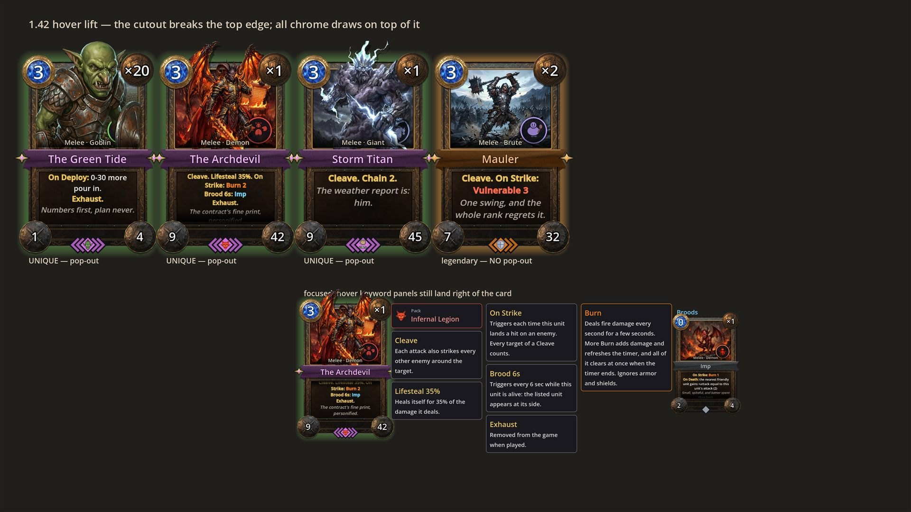
A screenshot-driver capture: proof the card-lift hover works, straight into the PR.
Balance at scale
An AI that plays the whole game
The headless simulator drafts packs, routes the map, fights every battle with relics and boss phases live. Hundreds of full runs in parallel.
A/B testing with paired seeds and McNemar's test, so balance changes ship with a p-value.
Card lab: measure one card causally, same deck, with and without it.
Calibrated against live playtester telemetry; tuning only moves when sim and reality agree.
headless Godot: Win · macOS · Linux · Web · Android · iOS
→
sign
macOS sign + notarize, from Windows
→
upload
steamcmd → Steam · butler → itch
→
live
playtest branch auto-set-live
Three Steam apps ride this: the game, the demo, and the soundtrack. The web build re-imports every texture lossy first, a full mirrored project, so the itch build stays small while desktop stays lossless.
The parts with no API
When Valve has no API, drive the browser
The Steamworks partner site is forms and checkboxes, so ~25 Playwright scripts share one logged-in browser profile and fill it like a very patient intern.
78 achievements + 4 stats: created, saved, re-opened, icons attached, and the site won't take an icon before the first save. The script knows.
Store copy pushed in 10 languages; achievement titles localized from the game's own catalogs; a 693 MB soundtrack ZIP uploaded through the site's XHR flow.
Nothing auto-publishes. The Publish button stays human.
Unlocked
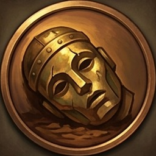
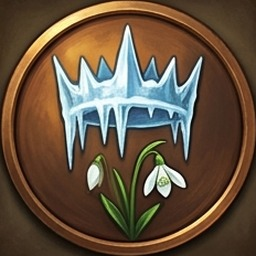
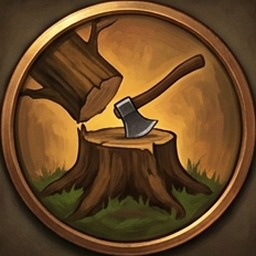
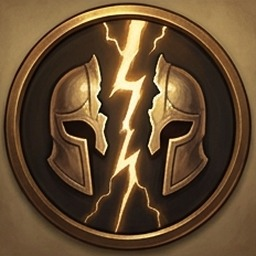
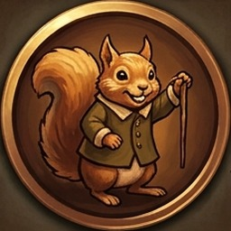
Locked
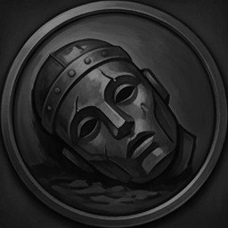
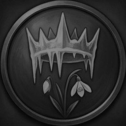
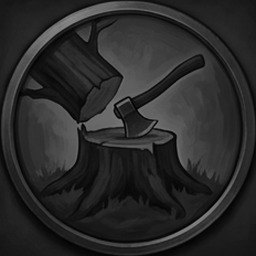
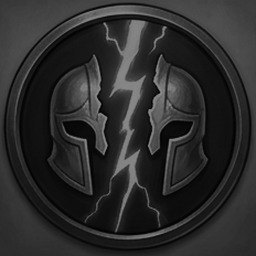
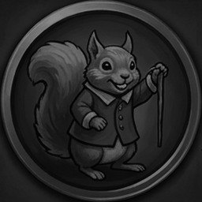
Every icon ships as a pair, sliced from 4×4 generated grids; the locked variant is one line of grayscale.
Closing the loop
Playtesters → Cloudflare → tickets
in-game panel
feedback + auto-screenshot + the last battle's data
→
Worker + D1
one Cloudflare Worker ingests feedback and telemetry
→
/triage-feedback
an agent fixes the safe ones same-day, backlogs the rest
→
tickets
the backlog feeds the worker fleet
My phone pings when someone starts playing, wins a run, or walks away. A cron sweep infers session ends from the telemetry gap. Discord first, Telegram fallback.
The screenshot is grabbed before the pause menu draws, and the last battle payload rides along, so “that fight was unfair” arrives with the fight.
ACT III
Art & Music
Nine hundred paintings and ten hours of original songs, from a team of one.
nano-banana · Gemini image gen
The art pipeline audits itself
audit
dump every card missing a painted face
→
prompt
name, flavor, pack palette, never mechanics text
→
generate
Gemini image API, 3 workers, retries
→
ingest
center-crop, Lanczos to 1200×896
→
wire
one dict entry in content.gd
→
audit = 0
“missing a painted face, must be ZERO”
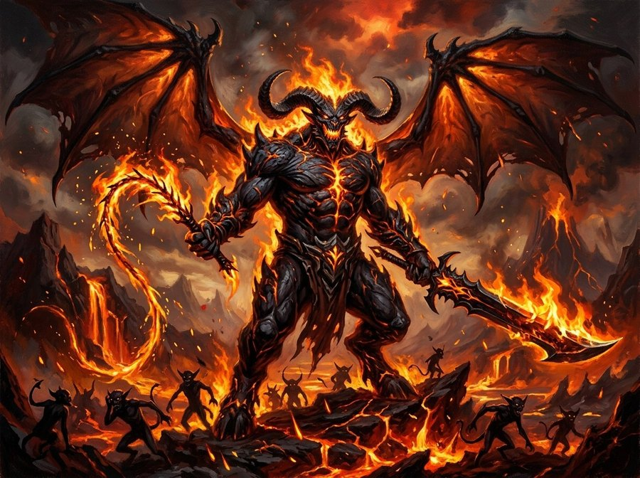
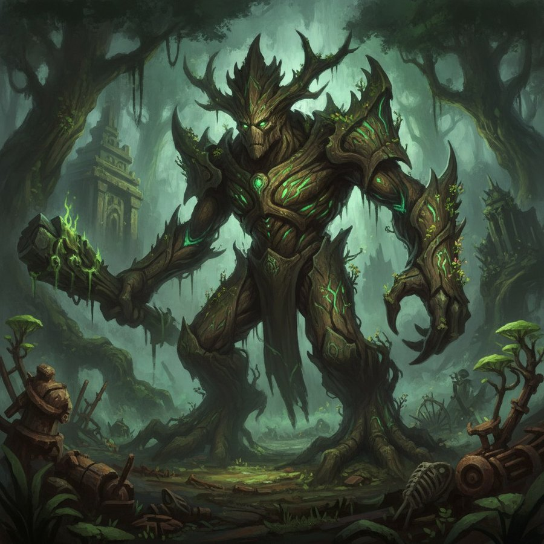
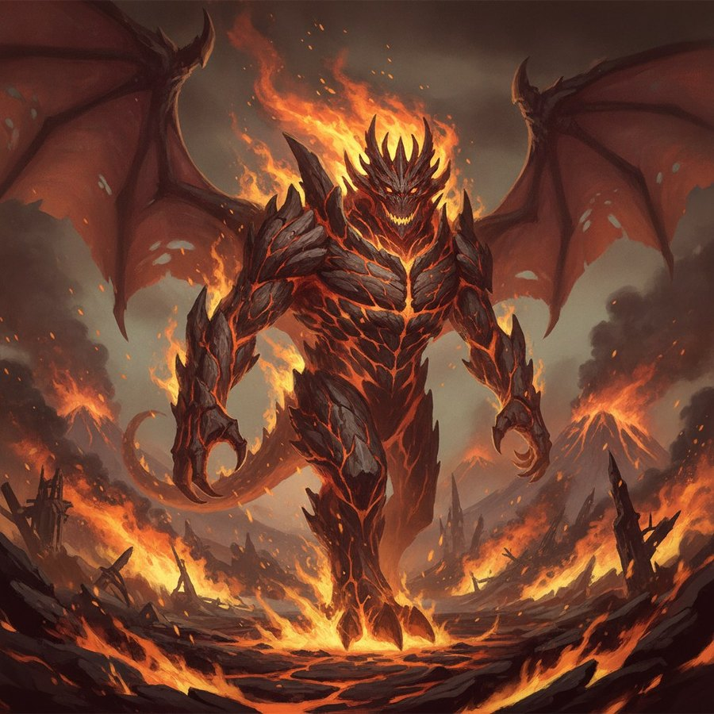
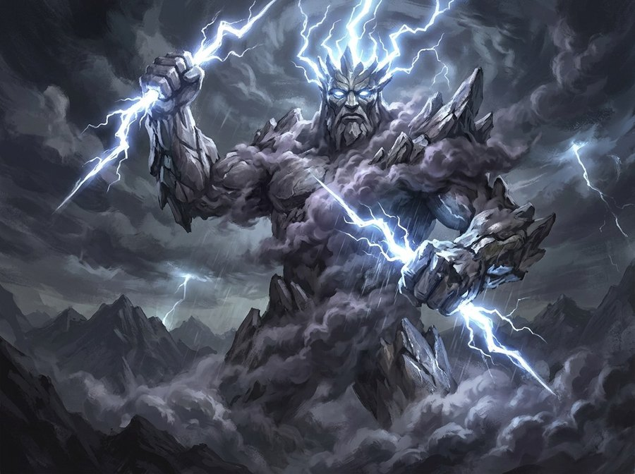
The count
An art department's output
830
painted card images (faces, full-art, pop-outs)
129
event illustrations
1,563
hand-tuned SVGs (units, icons, rigs)
208
enemy-rig body parts across 29 bespoke animated lords
245
paper-doll pieces, gilded twins included
156
achievement icons, unlocked + grayscale locked
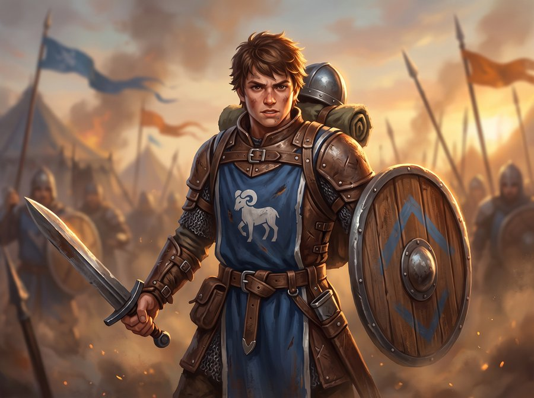
This is the first image the pipeline ever produced. The humble Recruit, at 2:11 AM on day one. The 796th looked considerably better.
Suno + Claude + Gemini
Every villain gets a genre
Enemy
Their sound
The Elder Treant
reggae rap
Grix the Goblin King
style prompt, in full: “goblin”
Brass Colossus
German industrial metal
The Slime Lord
“classic white rapper from Detroit. a little whiny.”
Silvertongue's Racket
big-band swing showtune
The Pale Rider
spaghetti-western doom
Amanita, the Sporecrown
psychedelic mushroom doom
Slime Swarm (pack)
bubblegum chiptune pop
Final Rites (pack)
New Orleans funeral dirge
Trapworks (pack)
modern trap. obviously.
Lyrics and style prompts co-written by Claude, Gemini, and Suno's own agent. Each lord's song references its real units and gimmicks.
The first voiced test song was so good it changed the plan on the spot: this game's soundtrack would have lyrics.
house rule, verbatim from the spec
"Default lean = divorced-dad-rock when a lord
had no strong genre pull."
Turn your sound on
Ten hours of original music. Listen.
Tremor of Earth
reggae rap
The Elder Treant
The Goblin King
goblin
Grix
Circus in the Back of My
manic horrorcore rap
Plays anywhere
Stamp Grind Melt Shine
industrial metal, auf Deutsch
Brass Colossus
The Slime Lord's Theme
Detroit rap, a little whiny
The Slime Lord
Vocals ⇄ Instrumental
The in-game toggle, live in this deck. Same take, stem-split, swapped at the exact playhead:
Day 1 · a playable battle loop, jukebox, first card art at 2 AM
Day 4 · the headless balance simulator, before most of the game exists
Day 7 · online co-op, lobby to netcode to Steam, in one day
Day 8 · the paper-doll commander; enemy rigs get personalities
Day 10 · every pack painted; 114 new relics; feedback worker live
Day 11 · real Steam AppID, achievements engine, mobile export
Day 15 · minigame carnival; iOS preset; Daily March + leaderboard
Day 19 · boss phases; emote wheel; cosmetics
Day 23 · a theme song for every pack and lord, start to finish
Day 26 · store overhaul: trailer, 10 shots, OST app, jukebox site
Day 31 · five playable warlords; trading cards; spells hit commanders
Day 33 · eleven languages in one day; store localized to ten
Evolution · drag the handle
The same fight, staged twice
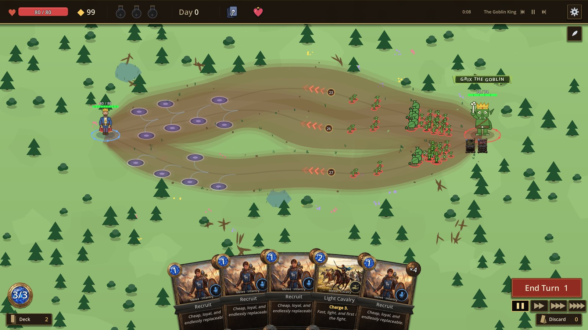
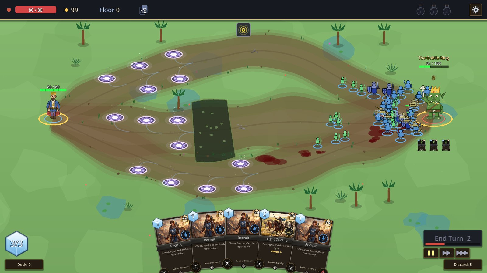
Day 11
Today
Same warlord, same plains, same five cards in hand, same 80 HP and 99 gold. I wrote a capture script that re-stages the old screenshot in today's build. Everything that moved, moved on its own.
Evolution
The art learned too
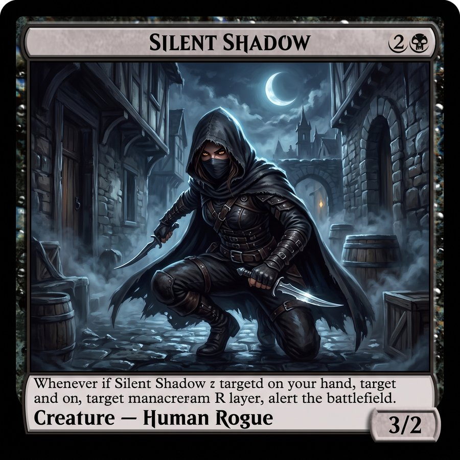
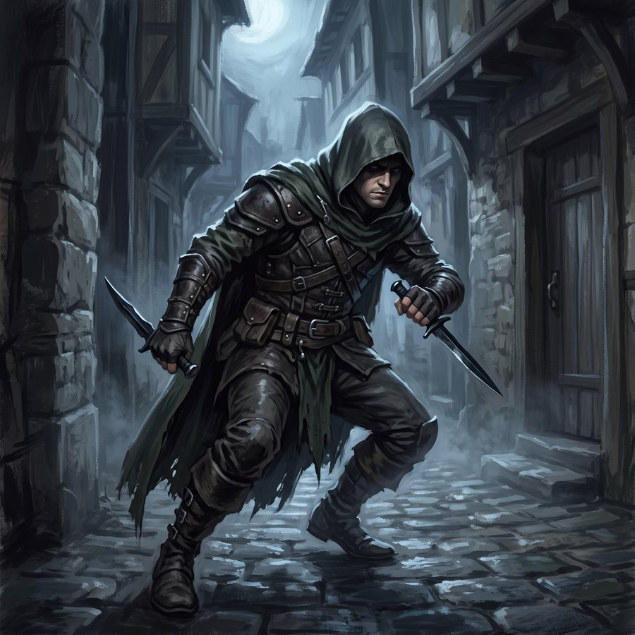
Day 2: the model kept painting card frames inside the card. Same-day fix: full-bleed scenes only.
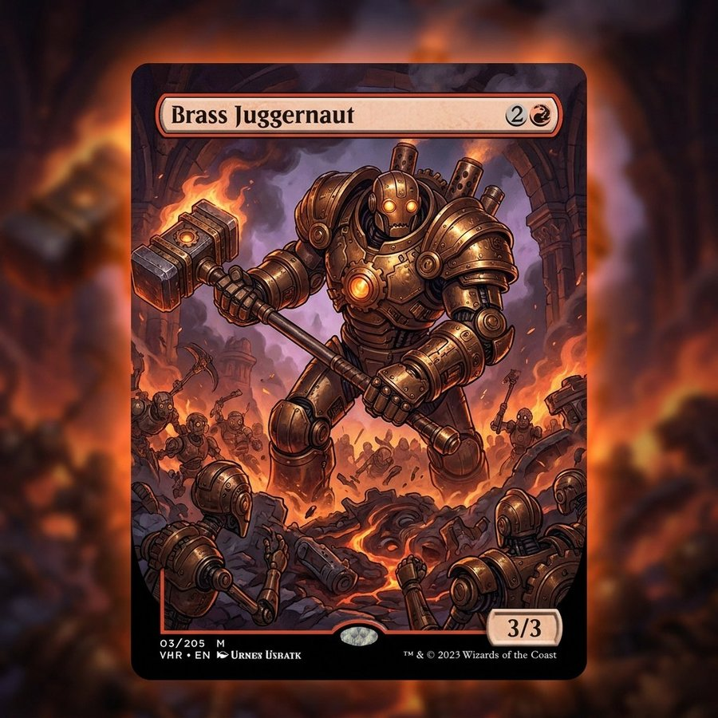
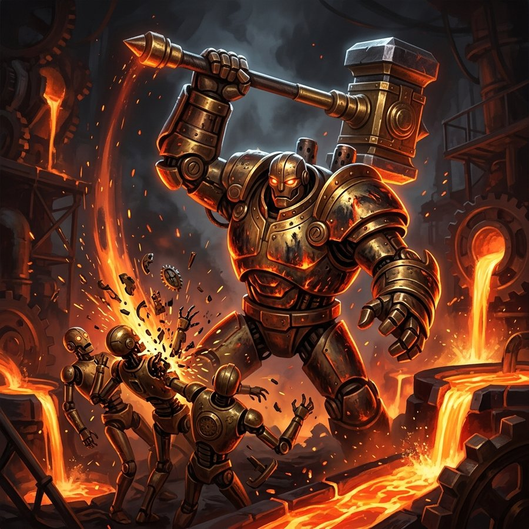
“Looks like a Magic card” → repainted as a clean scene. Style rules became prompt law.
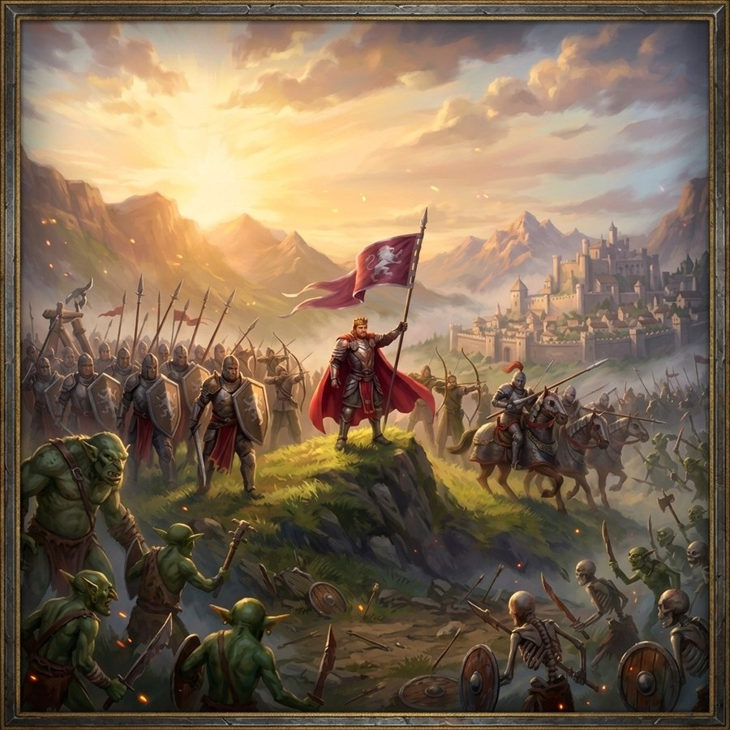
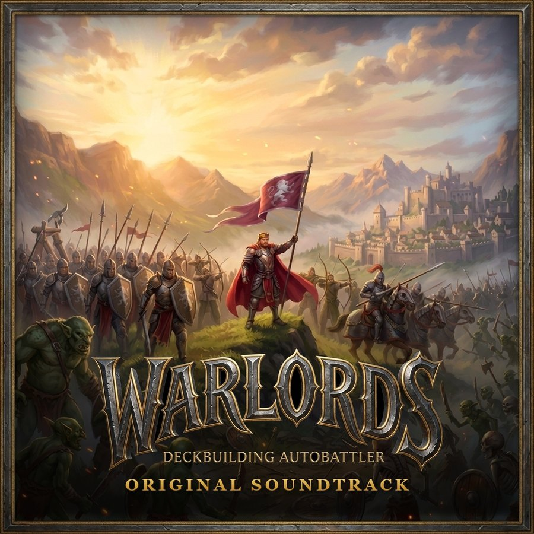
Valve rejected the OST cover for having no game logo. Regenerated, resubmitted, approved.
ACT V
The Job
The skills that transfer aren't coding skills. They're manager skills: clear briefs, crisp acceptance criteria, knowing when to trust, when to verify, and what to kill.
I review outcomes. Screenshots, sim numbers, the feel of the build. Almost never the code itself.
Real prompts, verbatim
Most direction is one sentence
jul 18 · taste
for the brass colossus ability, Thunderclouds have to be a lot cooler than just circles - make it look like clouds
jul 20 · bug report
shield bearers when upgraded says Protection 30, but it should be shield
jul 28 · localization
Tooltips on the relics in the top bar was not translated.
jul 21 · shipping
pull down the latest, then push up a new build to steam, itch, android, demo, everywhere
jul 30 · the entire standup
what is needed from me?
Real prompts, verbatim
…and some direction is a design brief
jul 22 · pack rework brief (excerpt)
rename trapworks to "traps and tricks". rework that pack to add more tricky things - giving units free placement, applying blind, teleporting groups of units from one place to another or switching their positions, more things with surprises, something with charm to trick someone. give Decoy Dummy the tank ability. make the starter card bear traps [...] get creative, and see how this pack could be made more fun, interesting, have unique builds and cool payoffs, etc. also see if there is a way to regenerate the pack art and description to try to get the pack picked more often
jul 26 · new feature (excerpt)
make a new screen before you pick packs where you have a cool character selection screen [...] every time you win a game with the previous character, you unlock the next one. each character gets a special starting relic and a custom starting deck [...] there should also be a mummy, a spaceman...
jul 28 · qa with a spec inside
enemies sometimes spawn units that immediately have red attack and hp [...] it should be green if it is higher than the original max HP (like growth does), regular if same, red if less. if I give a unit +5 max HP and they take 1 damage, it should still be green.
Real prompts, verbatim
Managing a fleet sounds like managing
jul 18 · lowering the review bar
I don't want to review everything, just merge in unless I specify
jul 29 · capacity planning
can you make more than 3 spin up to handle the ticket backlog? make it ten since my tokens just refreshed
jul 28 · delegation, full autonomy
you do the steam partner site changes for the game and demo, localize the store page, do the achievement strings. make all the changes necessary on that site. [...] do all steps, don't ask me for any input, and make sure to complete the whole thing
jul 22 · performance management
what did i say about stopping when you have tasks or phases left?
ACT VI
Scars
The parts that hurt. You'll want these if you try this.
July 29
The night one agent erased everyone's work
A dozen agents had worked through the night. One of them hit a snag, decided the history looked wrong, and reverted the lot. Every other agent's merged work, gone.
The recovery was archaeology: one stray commit had preserved only the test drivers. Orphaned tests describing features that no longer existed, so the tests became the spec, and thirteen tickets rebuilt the night.
New law: every worker commits and pushes relentlessly, and works isolated. Nobody touches shared history.
the recovered spec, in effect
ttest_undying_fx.gd → what WAS undying fx?
ttest_relic_rework.gd → which relics changed?
ttest_summon_storm.gd → storm did… something?
13 tickets filed: #118–#130
"orphaned drivers ARE the spec"
Same lesson every distributed team learns, except my team runs at 3 AM and never gets tired enough to stop.
The rest of the scar tissue
What was actually hard
The Twins' duet
Suno kept blending two singers into one voice. The fix reads like a legal contract: “THE MAN … THE WOMAN … the singer NEVER changes mid-section.” Take after take.
Balance at scale
563 cards × 41 lords × 21 packs. Humans can't test that. The answer was the simulator, personas, and paired-seed statistics.
Boomerang bugs
Some bugs return. Attack-speed resets, tooltip clipping, untranslated strings. The cure is a regression driver per fix, 119 of them now.
Token ceilings
The fleet is budget-bound. Size labels route small work to cheap models; big pushes wait for the window. “make it ten since my tokens just refreshed.”
Valve's clock
Every review round costs days: demo flagged for undisclosed online play, OST cover bounced for a missing logo. Automation can't speed up a queue.
The last 10%
Polish still takes the longest. AI compresses the first 90%; the final feel (juice, readability, fairness) is still handcraft, one build at a time.
Five weeks with a fleet
What it's actually like
Speed
One prompt returned a fanned hand of cards, each rotated into place, neighbours sliding aside as the hovered one lifts and grows.
Time to a working thing has never been shorter.
Bloat is one prompt away, and so is any small delight. Saying no is the hard part now.
It snags, and it forgets
I say finish the whole list, and no flavor text on cards, over and over.
Verbose by default, in code and in prose. Most of my editing is cutting.
Em dashes are only the surface. The whole cadence announces itself.
What it does to learning
Tutorials are dead weight. Ask, and it teaches while it builds.
Assembly-level tuning, nodeType 9, git bisect. What I skip learning is mostly what I no longer need to know, and that still reads as a loss.
It feels more like playing a game than writing code.
Five weeks with a fleet
What I'd carry to the next one
Always automate
It handed me a tidy file of achievements and said a human has to upload them. No. Write the Playwright script and drive the browser yourself.
The rig is what transfers between projects. Syntax in your head is not.
Spend the scarce model well
Fable is the sharpest and the most rationed. It wrote the multiplayer plan. Opus built it.
Claude, Gemini and Suno each win at something different. The results came from stacking them with local tools.
The hard part never moved
Almost nothing fails because it could not be built. It fails because someone stopped.
Motivation, communication and vision setting matter more now, not less.
Start from the goal. Learn, earn, or make your friends laugh. Name the problem, not the thing you want to build.
If you try this
What I'd tell your team
1 · Verification is the product. The game is agent output; the audits, sims, and screenshot drivers are what make it shippable. Build the proving ground first.
2 · Demand evidence, not diffs. A PR with a screenshot and a green audit merges itself. Reviewing code line-by-line doesn't scale to ten workers; reviewing outcomes does.
3 · Isolation is cheap, lost work isn't. Worktrees, relentless pushes, no shared mutable history. Ask me how I know.
4 · Keep taste human. Direction, feel, fairness, humor. The prompts that matter are opinions. “Thunderclouds have to be a lot cooler than just circles.”
5 · Size the ceremony to the change. One-line fixes go inline; only real features earn the full ticket pipeline. Overhead must pay for itself.
The part everyone is doing arithmetic about
The whole bill was about five hundred dollars
What
Cost
Claude Max
$200 / month
nano-banana image generation
$100, one month
Suno
$10 / month
Steam Direct, once per game
$100
Claude usage credits, bought once
~$90
Everything else
$0
No engine license, no middleware, no contractors, no art budget, no music budget, no publisher.
The usage credits were the one bad buy. The Max plan already covers the fleet, and paying per token on top of it bought me nothing.
Five weeks of a content studio, for roughly what a single day of contract art would cost.
Roadmap
Where it goes from here
Marketing, and wishlists above all · the biggest job left, and the one I have done least of
Pad-native overhaul · controller play without a cursor
Demo approval → Steam launch · through Valve's queue, then the Release button
Trading cards unlock post-release; OST goes live alongside
Mobile · the exports already build; the UX pass is the work
More of everything · the factory doesn't stop: content is a ticket away
Every costume Uncle Jim owns, celebrating early. Wishlist it and make him right.
Recap
One person. Thirty-five days. A real game on Steam, and a factory that built it.
I spent almost none of these five weeks writing code. I spent them filing tickets, checking evidence, and making calls on taste.
Not a prototype
It's a live store page, right now
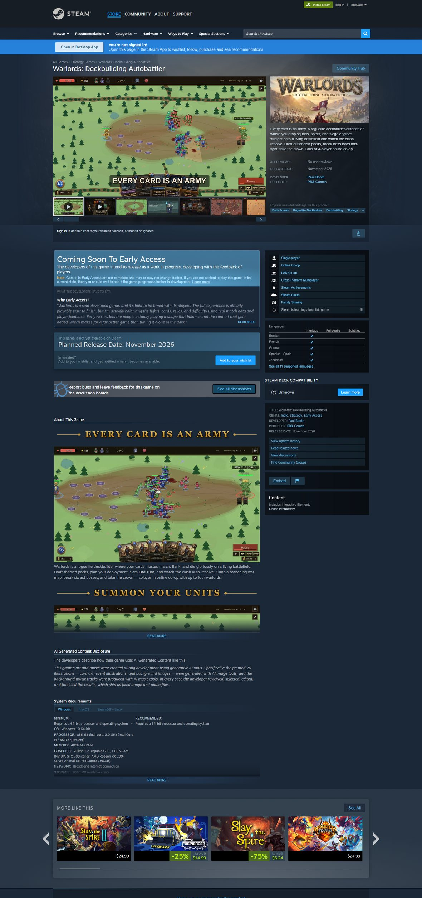
Captured from store.steampowered.com. The real page, live today. Every asset on it came out of the same pipeline.
Capsules, trailer, 10 screenshots, animated GIFs, the long-form copy, the tag set, the AI-content disclosure, and the release date.
Localized into 10 languages. Three approved Steam apps hang off it: the game, a free demo, and the soundtrack, plus 78 achievements and a 15-card trading-card set with badges and backgrounds.
Scroll far enough and Steam puts it beside Slay the Spire. That's the shelf it's trying to earn.